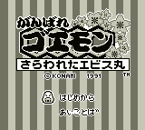

Ganbare Goemon (VGB)

I believe this is the game series listed as "Charge Goemon" in Ken Arromdee's
list. This is a Zelda-style game where you run around bashing enemies and
buying supplies to reach your goal; unfortunately, I have no idea what the
goal is. Decent graphics still don't cover the weak gameplay though.
Ganbare Goemon (MSX)
This is exactly like the Gameboy game above, but it has color. Other than
that, there appears to be no difference except that the levels may be set
up differently. Haven't been able to play both games yet to see if the levels
differ.
Return to Emulator Table of Contents
Last Modified 14 Dec 1996
Created 28 Sept 1996
Luis A. Cruz
cruzl@ccs.neu.edu